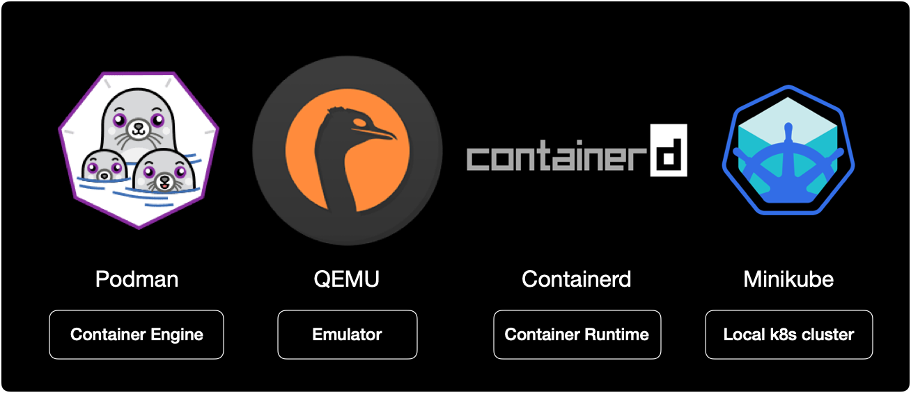
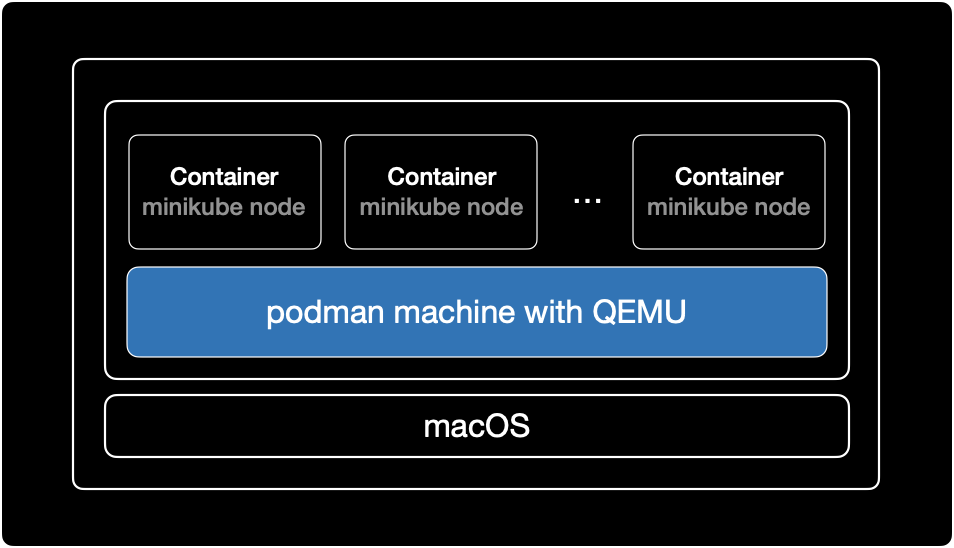
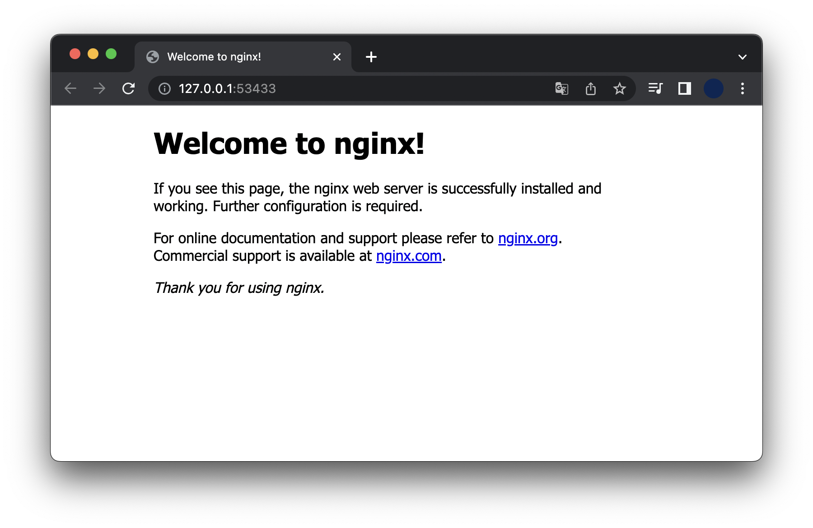

minikube containerd 전환
개요
도커 데스크탑은 최근 유료화 선언으로 인해 많은 사용자들이 등을 돌린 상황입니다.
저 또한 도커 데스크탑을 사용하던 유저로서, 이제는 버릴 때가 되었다고 판단했습니다.
그래서 로컬 테스트 환경으로 사용했던 docker desktop을 버리고, podman + containerd로 minikube 클러스터 사용하기로 마음 먹었습니다.
제가 사용하는 소프트웨어 스택은 다음과 같습니다.

docker desktop 자리를 Podman, QEMU 그리고 Containerd로 대체했습니다.
Containerd는 앞으로 쿠버네티스 환경에서 기본적으로 사용되는 CRI이기 때문에 어차피 사용할 거 로컬에서도 익숙해지자는 의미로 사용했습니다.
$ minikube start --help
...
--container-runtime='':
The container runtime to be used. Valid options: docker, cri-o, containerd (default: auto)
minikube에서는 자동적으로 설치된 container runtime을 감지 후 사용합니다.
대부분의 minikue 사용자들은 아직까지는 docker desktop + dockershim 조합으로 사용하고 있습니다.
환경
- OS : macOS 12.5
- Hardware : M2, 8 Core CPU, RAM 8G
- Shell : zsh + oh-my-zsh
- minikube v1.26.1
- podman 4.1.1
전제조건
- macOS용 패키지 관리자인 brew 설치가 필요합니다. podman 설치에 필요합니다.
- 로컬 쿠버네티스 클러스터를 생성하기 위해 minikube 설치가 필요합니다.
시작하기
podman 구성
podman 설치
brew를 사용해서 podman을 설치합니다.
$ brew install podman
podman이 설치될 때 종속성으로 인해 가상화 에뮬레이터인 qemu도 같이 설치됩니다.
podman 머신 생성
podman 가상머신을 생성합니다. podman은 가상머신을 생성할 때 qemu를 사용합니다.
가상머신 리소스로 2 CPU Core, 4G RAM, 20GB 스토리지를 할당합니다.
$ podman machine init \
--cpus 2 \
--memory 4096 \
--disk-size 20
podman 가상머신을 시작합니다.
$ podman machine start
podman 가상머신 리스트를 조회합니다.
$ podman machine ls
NAME VM TYPE CREATED LAST UP CPUS MEMORY DISK SIZE
podman-machine-default* qemu About a minute ago Currently running 2 4.295GB 21.47GB
가상머신 타입이 qemu입니다.
LAST UP 값이 Currently running이면 현재 실행중인 상태입니다.
podman 엔진 버전을 확인합니다.
$ podman version
Client: Podman Engine
Version: 4.1.1
API Version: 4.1.1
Go Version: go1.18.3
Built: Wed Jun 15 05:12:46 2022
OS/Arch: darwin/arm64
Server: Podman Engine
Version: 4.1.1
API Version: 4.1.1
Go Version: go1.18.3
Built: Thu Jun 23 01:18:30 2022
OS/Arch: linux/arm64
Podman Engine 4.1.1을 사용하고 있습니다.
minikube 설정
기본적으로 minikube는 podman을 실행할 때 sudo를 사용합니다.
minikube에서 containerd를 사용하려면 podman의 Rootless 설정해주는 걸 권장하고 있습니다.
관련자료
$ minikube config set rootless true
이후 minikube 설정을 확인합니다.
$ minikube config view
- rootless: true
rootless가 활성화 상태입니다.
minikube 클러스터 생성
2대의 노드로 구성된 minikube 클러스터를 생성합니다.
이 때 노드를 생성할 드라이버는 podman, 컨테이너 런타임은 containerd로 지정합니다.
$ minikube start \
--driver='podman' \
--container-runtime='containerd' \
--kubernetes-version='stable' \
--nodes=2
앞으로는 docker보다는 containerd에 익숙해져야 합니다.
쿠버네티스가 컨테이너 런타임으로 오피셜하게 밀고 있는게 Containerd이기 때문입니다.
AWS도 마찬가지로 Kubernetes 버전 1.23 출시부터 공식적으로 발표된 Amazon EKS AMI에는 유일한 런타임으로 containerd를 포함한다고 공지했습니다.
AWS 공식문서
minikube와 podman + containerd를 사용해서 구성한 아키텍처는 다음과 같습니다.

context 조회
minikube 클러스터가 생성 완료되면 터미널에서 자동적으로 context가 변경되어 클러스터에 연결됩니다.
$ kubectl config get-contexts
CURRENT NAME CLUSTER AUTHINFO NAMESPACE
* minikube minikube minikube default
현재 minikube 클러스터에 접속된 상태입니다.
노드 확인
클러스터를 구성하는 노드 목록을 확인합니다.
$ kubectl get node -o wide
NAME STATUS ROLES AGE VERSION INTERNAL-IP EXTERNAL-IP OS-IMAGE KERNEL-VERSION CONTAINER-RUNTIME
minikube Ready control-plane 75s v1.24.3 192.168.49.2 <none> Ubuntu 20.04.4 LTS 5.18.13-200.fc36.aarch64 containerd://1.6.6
minikube-m02 Ready <none> 57s v1.24.3 192.168.49.3 <none> Ubuntu 20.04.4 LTS 5.18.13-200.fc36.aarch64 containerd://1.6.6
2대의 노드가 Ready 상태로 있습니다.
노드의 CONTAINER_RUNTIME 값이 docker가 아닌 containerd://1.6.6 인 걸 확인할 수 있습니다.
컨테이너 확인
podman 엔진에 올라간 컨테이너 목록을 확인합니다.
$ podman ps
CONTAINER ID IMAGE COMMAND CREATED STATUS PORTS NAMES
606cc91bbe20 gcr.io/k8s-minikube/kicbase:v0.0.33 About a minute ago Up About a minute ago 0.0.0.0:40481->22/tcp, 0.0.0.0:34387->2376/tcp, 0.0.0.0:35643->5000/tcp, 0.0.0.0:41253->8443/tcp, 0.0.0.0:46851->32443/tcp minikube
b250d416cac7 gcr.io/k8s-minikube/kicbase:v0.0.33 42 seconds ago Up 43 seconds ago 0.0.0.0:45537->22/tcp, 0.0.0.0:39403->2376/tcp, 0.0.0.0:41409->5000/tcp, 0.0.0.0:45209->8443/tcp, 0.0.0.0:35681->32443/tcp minikube-m02
각 컨테이너 하나가 1대의 minikube 노드를 의미합니다.
테스트
deployment 배포
테스트를 위해 nginx 파드 3대를 배포하는 deployment를 생성합니다.
$ cat << EOF | kubectl apply -n nginx -f -
---
# Namespace
apiVersion: v1
kind: Namespace
metadata:
name: nginx
labels:
app: nginx
---
# Deployment
apiVersion: apps/v1
kind: Deployment
metadata:
name: nginx-deployment
namespace: nginx
labels:
app: nginx
spec:
replicas: 3
selector:
matchLabels:
app: nginx
template:
metadata:
labels:
app: nginx
spec:
containers:
- name: nginx
image: nginx:1.14.2
ports:
- containerPort: 80
EOF
containerd 런타임을 사용한 클러스터 환경에서도 nginx 컨테이너 3대가 정상적으로 생성된 걸 확인할 수 있습니다.
$ kubectl get all -n nginx
NAME READY STATUS RESTARTS AGE
pod/nginx-deployment-6595874d85-4jg46 1/1 Running 0 3m17s
pod/nginx-deployment-6595874d85-ffpns 1/1 Running 0 3m17s
pod/nginx-deployment-6595874d85-n7vth 1/1 Running 0 3m17s
NAME READY UP-TO-DATE AVAILABLE AGE
deployment.apps/nginx-deployment 3/3 3 3 3m17s
NAME DESIRED CURRENT READY AGE
replicaset.apps/nginx-deployment-6595874d85 3 3 3 3m17s
service 배포
nginx pod를 외부로 노출시키기 위한 service 리소스를 생성합니다.
서비스 타입은 NodePort 입니다.
$ cat << EOF | kubectl apply -n nginx -f -
---
apiVersion: v1
kind: Service
metadata:
name: nginx-service
namespace: nginx
spec:
type: NodePort
selector:
app: nginx
ports:
- targetPort: 80
port: 80
# nodePort is Optional field
# By default and for convenience,
# the Kubernetes control plane will allocate
# a port from a range (default: 30000-32767)
nodePort: 30080
EOF
nginx-service 서비스가 생성되었습니다.
$ kubectl get service -n nginx
NAME TYPE CLUSTER-IP EXTERNAL-IP PORT(S) AGE
nginx-service NodePort 10.105.26.6 <none> 80:30080/TCP 2m4s
minikube 터널링으로 노드포트에 접속합니다.
$ minikube service nginx-service -n nginx
|-----------|---------------|-------------|---------------------------|
| NAMESPACE | NAME | TARGET PORT | URL |
|-----------|---------------|-------------|---------------------------|
| nginx | nginx-service | 80 | http://192.168.49.2:30080 |
|-----------|---------------|-------------|---------------------------|
🏃 nginx-service 서비스의 터널을 시작하는 중
|-----------|---------------|-------------|------------------------|
| NAMESPACE | NAME | TARGET PORT | URL |
|-----------|---------------|-------------|------------------------|
| nginx | nginx-service | | http://127.0.0.1:53433 |
|-----------|---------------|-------------|------------------------|
nginx 파드에 정상적으로 연결되었습니다.

이처럼 podman + containerd 환경에서도 동일하게 일반적인 테스트를 수행할 수 있습니다.
단, minikube에서도 공식적으로 podman을 experimental 상태라고 표기해놓았기 때문에 일부 테스트가 동작하지 않을 수도 있다는 점을 참고해야 합니다.
$ minikube start --help
...
--driver='':
Driver is one of: qemu2 (experimental), docker, podman (experimental), ssh (defaults to auto-detect)
help 옵션으로 확인해보면 podman (experimental)이라고 표기되어 있습니다.
실습환경 정리
중지
minikube 클러스터와 podman 머신을 중지해서 메모리를 회수하는 게 중요합니다.
아래 명령어로 중지합니다.
$ minikube stop
$ podman machine stop
삭제
만약 minikube 클러스터와 podman machine을 이후에 재사용하지 않을 경우, 완전히 삭제하고 싶다면 아래 명령어를 실행해서 정리합니다.
$ minikube delete
$ podman machine rm -f
결론
docker desktop을 버리고 containerd + podman으로 대체해도 minikube 테스트에는 큰 지장이 없는 걸로 확인됩니다.
docker desktop 대신 containerd + podman 조합으로 사용해보는 것도 괜찮은 것 같습니다.